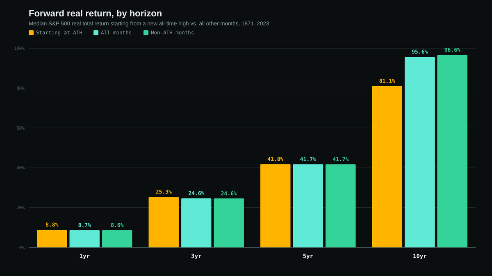
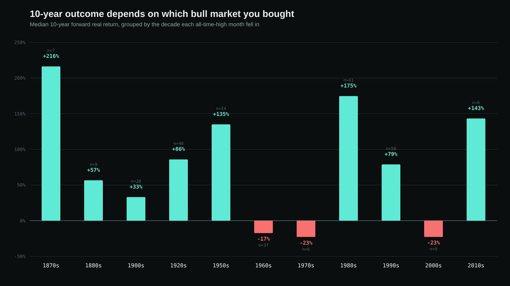

Does Buying at an All-Time High Hurt Returns? A 152-Year Test
"Don't wait for a dip, buying at all-time highs isn't actually risky" is one of the more comforting lines in investing commentary, and it gets repeated a lot — especially when, as in 2026, the market keeps making new highs and everyone who didn't buy feels a little later every month. The trouble is that the firms who've actually run the numbers don't agree with each other. J.P. Morgan Asset Management's Guide to the Markets reports that buying the S&P 500 at a record high has historically beaten buying on an average day at the 1-, 3- and 5-year mark. BlackRock's research reportedly found the opposite at one year — a lower average 12-month return after a new high (7.6%) than on other days (8.8%) — before flipping back in favor of all-time highs at 3 and 5 years. And a widely read independent analysis of Dow data back to 1915 found 1-year returns a bit higher after a new high, but 5- and 10-year returns considerably lower, with the gap holding up as statistically significant. (These are reported secondhand through press coverage and blog summaries of each firm's work, not read directly from the original releases, which is worth keeping in mind before leaning on any single number below.)
Three reputable-sounding sources, three different answers, each using a different index, window and definition of "return." That's exactly the kind of claim this blog exists to re-run from scratch rather than referee between competing citations. So I built an independent 152-year test using Shiller's S&P 500 dataset and checked it myself.
Short version: the claim holds up reasonably well at 1–3 years, and quietly breaks down at 10 — not because new highs are cursed, but because the market's all-time-high months are bunched into a handful of specific eras, and a few of those eras (late 1960s, late 1990s, mid-2000s) were followed by exactly the decades you wouldn't want to buy the top of.
Methodology
I used Robert Shiller's monthly S&P 500 dataset (nominal price, dividends, CPI), the same source and the same vintage cutoff (through June–September 2023, where the mirror's dividend and CPI fields stop being populated) used in this blog's leverage backtest. That gives 1,832 usable months from February 1871 through September 2023.
- All-time high (ATH) definition: a month where the nominal S&P 500 price index closes above every prior month's close — the way "stocks hit a new all-time high" is actually reported in headlines. 310 of 1,832 months (16.9%) qualify.
- Forward return: for each month, I built a real (inflation-adjusted) total-return index — monthly price return plus 1/12th of the trailing real dividend yield, compounded — and measured the forward 1-, 3-, 5- and 10-year change in that index starting from each month.
- Comparison groups: for every horizon, I compared the median forward return starting from ATH months against (a) all months and (b) non-ATH months specifically.
1 to 3 years: close to a wash, arguably a slight edge for ATH
At the shorter horizons, buying at a new high looks, if anything, marginally better than the alternative — which matches J.P. Morgan's reported finding and the "short end" of BlackRock's, if not the magnitude:
| Horizon | ATH median | All-months median | Non-ATH median | ATH % positive | Non-ATH % positive | ATH median maxDD* |
|---|---|---|---|---|---|---|
| 1yr | +8.8% | +8.7% | +8.6% | 68.4% | 69.1% | 6.2% |
| 3yr | +25.3% | +24.6% | +24.6% | 81.1% | 77.9% | 18.1% |
| 5yr | +41.8% | +41.7% | +41.7% | 73.1% | 82.5% | 24.5% |
| 10yr | +81.1% | +95.6% | +96.6% | 80.5% | 90.2% | 39.4% |
*Median maximum drawdown of the real total-return index at any point during the forward window, measured from ATH-starting months only. All return figures are real (inflation-adjusted) total return, median across all eligible starting months (n=310 for ATH at every horizon except 10yr, n=257, where the window runs past the end of the dataset for the most recent ATH months).

At 1 and 3 years, ATH-starting months actually have a slightly higher median return and a higher or roughly equal share of positive outcomes than the full sample. At 5 years the medians are essentially identical (41.8% vs. 41.7%), but the ATH group's mean is noticeably lower than non-ATH's (39.9% vs. 50.9%) and its share of positive outcomes drops to 73.1% from 82.5% — the first sign that the ATH distribution has a fatter left tail, even though its center hasn't moved.
10 years: the gap opens, and it's a clustering story, not a curse
At 10 years, ATH-starting months produced a median real total return of 81.1%, versus 95.6% for all months and 96.6% for non-ATH months — a gap of roughly 0.8–0.9 percentage points of annualized real return (6.12% CAGR for ATH-starts vs. 6.94–7.00% for the alternatives), and a median maximum drawdown of 39.4% somewhere along the way. That's the one horizon where this test disagrees with J.P. Morgan's reported 5-year finding and lines up with the Dow-since-1915 result instead.
The reason isn't that all-time highs are inherently dangerous — it's that they're not evenly distributed across history. Breaking the 10-year forward return down by the decade each ATH month fell in shows the whole effect is coming from three specific clusters:

Every decade with a negative median 10-year outcome — the 1960s (highs set right before the 1970s stagflation bear), the 1970s (what few highs existed led into the early-80s grind), and the 2000s (dot-com-era highs leading into the 2008 crash) — was followed by one of the market's worst stretches. Every other decade's all-time highs, including the volatile 1990s (n=58, median +78.9%, but with a worst-case outcome of −45.7% from the dot-com-peak highs mixed into that median), paid off over the following ten years. The 10-year headline number isn't really "buying at highs costs you 15 points of return" — it's "three of the eleven decades in this sample happened to set highs right before a historically bad one," and those three decades are heavy enough in the tail to drag the median down across the full 152-year sample.
Robustness check: real vs. nominal highs
The ATH definition above uses the nominal price index, matching how headlines report it. Using a stricter real (inflation-adjusted) definition instead — where a month only counts if it beats every prior real price, which happens in just 9.6% of months instead of 16.9% — the short-horizon picture gets noisier (1yr median flips to slightly below baseline, 8.2% vs. 8.7%) but the long-horizon story gets more pronounced, not less: a 10-year median of 62.9% against an all-months baseline of 95.6%. The direction of the main finding doesn't depend on which definition you pick.
A sharper version of the same question: dips vs. highs
One framing I found attributed to Dimensional Fund Advisors' research — again via secondhand reporting, not the original release — compares buying at a new high against waiting for a 10% correction first. I ran the same comparison with my data: against months where the real price was at least 10% below its trailing peak (66.4% of the sample — this is a much broader bucket than "the exact bottom," closer to "somewhere in a drawdown"), forward returns were higher than ATH-starts at every horizon tested, and the gap also widens with time: +10.3% vs. +8.8% at 1 year, growing to +112.7% vs. +81.1% at 10 years.
That sounds like clean evidence for "buy the dip," and it would be irresponsible to present it that way. Being "at least 10% below the peak" is true two-thirds of the time in this dataset and includes months at the start of a crash as much as months near its end — it's a far weaker, far more common signal than picking a bottom, and it's directionally correlated with the same decade-level clustering problem described above (a 10%+ drawdown is also just... cheaper, which mechanically helps forward returns independent of timing skill). This isn't a market-timing strategy; it's a data point that the "all-time highs are just as good as any other entry" claim gets weaker, not stronger, the more carefully you compare it to the alternative.
Bottom line
- At 1–3 years, the "don't fear all-time highs" claim holds up — ATH-starting months match or slightly beat the broader sample on both median return and win rate.
- At 5 years it's a wash on the median but the distribution widens — same typical outcome, lower mean, fewer positive outcomes.
- At 10 years the claim breaks down — a real gap of roughly 0.8–0.9 points of annualized return, concentrated almost entirely in the handful of decades whose all-time highs happened to precede the market's worst stretches, not a uniform tax on buying at highs in general.
- None of this is a timing signal. The honest reading is closer to "you can't tell which kind of decade you're buying into from the price level alone" than "sell at highs" or "buy every dip" — both of the sharper claims this post tested turned out to be more sample-dependent than the commentary around them suggests.